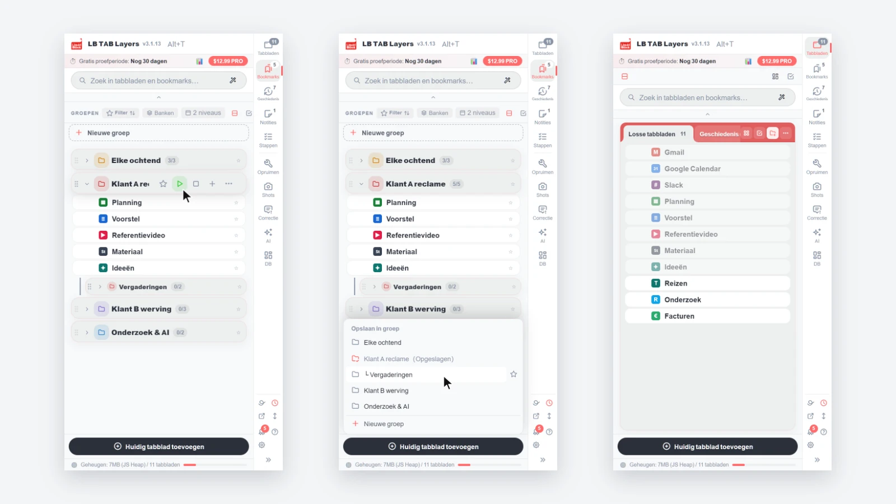
Druk op Alt+T (Option+T op een Mac) om LB TAB Layers te openen. In het begin hoef je maar drie dingen te kennen: met Huidig tabblad toevoegen sla je het tabblad op waar je nu bent, met ▶ open je een hele groep en met ■ sluit je die weer. Alles wat je opslaat, wordt bewaard als Chrome-bookmark. Het blijft dus staan, ook als je de tabbladen sluit of Chrome opnieuw start.
Bedankt dat je LB TAB Layers hebt geïnstalleerd. Op deze pagina staat alleen wat je in de eerste vijf minuten nodig hebt.
Het idee is simpel. Tabbladen zijn “nu”: waar je op dit moment aan werkt. Bookmarks zijn “later”: waar je op terug wilt komen. De geschiedenis van vandaag is het “logboek” van wat je hebt bekeken. In LB TAB Layers wissel je tussen die drie in één zijpaneel.
💡 Met Alt+T (Option+T op een Mac) open je het op elk moment. Je kunt ook op het pictogram van LB TAB Layers in de werkbalk klikken. Zie je het pictogram niet? Klik dan op het puzzelstukje en zet LB TAB Layers vast.
Eerst: begin met een kopie van je huidige bookmarks (aanbevolen)
Heb je in Chrome al bookmarks? Dan begin je het snelst door ze eerst naar TAB Layers te kopiëren. Je originele bookmarks worden niet verplaatst, dus er kan niets kwijtraken.
Klik op “Begin met je bookmarks (aanbevolen)”
Dit staat helemaal bovenaan in het welkomstscherm dat je direct na de installatie ziet.
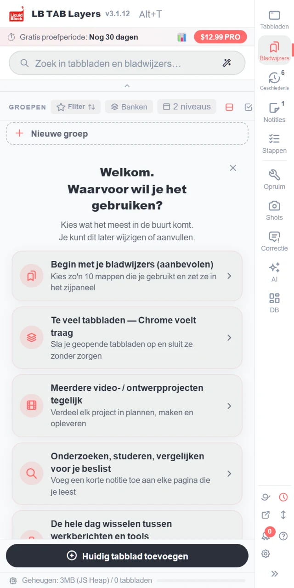
Klik op “OK” om ze te kopiëren
Je ziet hoeveel bookmarks er worden gekopieerd. Je originele bookmarks blijven precies waar ze zijn. Ook bij heel veel bookmarks duurt het maar een paar seconden.
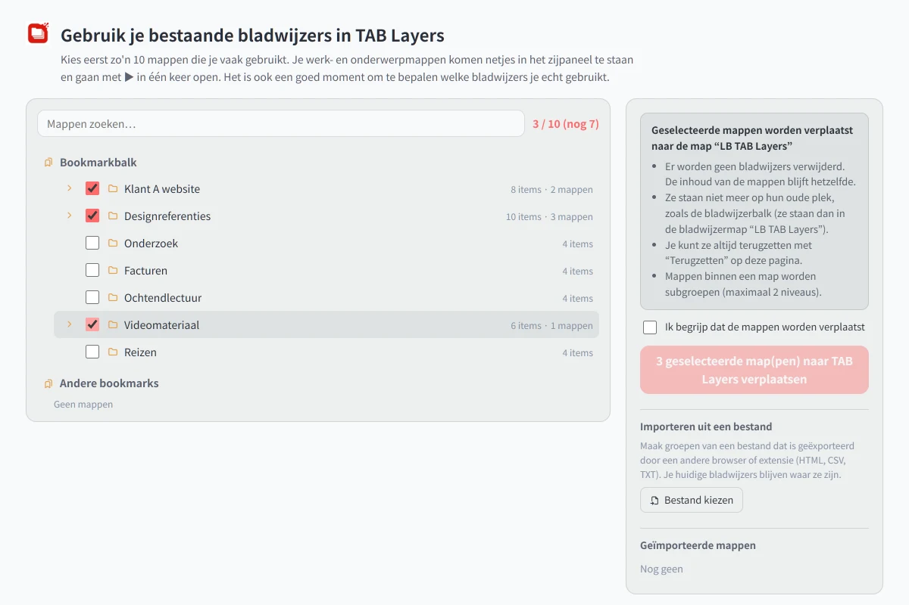
Verplaats een pagina die je vaak gebruikt naar “Mijn eerste project”
De kopieën komen samen op een verzamelplek met de naam “Huidige bookmarks (gekopieerd datum)”, en elke map wordt een subgroep. Klik helemaal rechts in de rij van een pagina die je vaak gebruikt op “→ Mijn eerste project”, en die pagina wordt daarheen verplaatst. De verzamelplek telt niet mee voor de limiet van 5 groepen in de gratis versie.
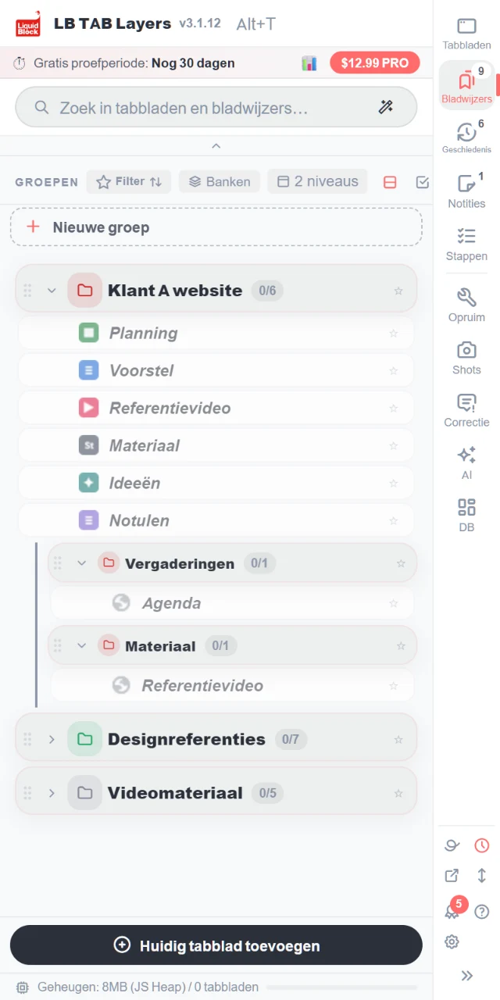
Open daarna met ▶ en sluit met ■
De kaart “Je eerste 3 stappen” bovenaan laat je stap voor stap zien wat je hierna doet. Heb je 200 of meer bookmarks, dan stelt hij ook voor om ze op het grote scherm (het dashboard) te sorteren.
💡 Je kunt ook mappen kiezen en ze ongewijzigd als groepen verplaatsen. Dat open je via Instellingen → Gegevens → Bookmarks, of via “Bookmarks importeren” bovenaan in het schermvullende dashboard. Daar kun je ook bestanden importeren die je uit andere browsers of extensies hebt geëxporteerd (HTML, CSV, TXT). Als je eenmaal gewend bent aan TAB Layers, biedt het ook aan om je originele bookmarks in één map op te ruimen (er wordt niets verwijderd en je kunt het altijd ongedaan maken).
Zit het zijpaneel in de weg? “Overlay” over de pagina
Het zijpaneel staat naast de pagina, dus op een klein scherm wordt de pagina smaller. Schakel dan over naar “Overlay”, dat het paneel over de pagina heen toont. Meestal staat er alleen een klein “+” aan de rand van de pagina, en het paneel gaat pas open als je het nodig hebt.
Kies “Overlay” bij Instellingen → Gedrag → Weergavemodus
Instellingen open je met het tandwiel helemaal onderaan in de kolom rechts. Hier kies je ook “Positie overlay” (links of rechts), “Breedte overlay”, “Positie knop” en “Weergave bij opstarten” (bijvoorbeeld “Even tonen”).
Sluit het zijpaneel
Druk op Alt+T of klik rechtsboven in het paneel op ×. Verschijnt het “+” niet op een pagina die al open was? Laad de pagina dan opnieuw.
Ga met de muis over het “+” aan de rand van de pagina
Het paneel schuift over de pagina heen. Ga je met de muis terug naar de pagina, dan sluit het weer.
In de overlay heb je de basisfuncties. Je kunt tabbladen en bookmarks beheren (opslaan, openen met ▶, sluiten met ■, zoeken) en Notities en Stappen gebruiken. Correcties op video’s en pagina’s gebruik je in het zijpaneel – druk op Alt+T om het te openen als je ze nodig hebt. Overlay is een PRO-functie (beschikbaar tijdens de gratis proefperiode van 30 dagen).
💡 Je kunt het ook buiten het zijpaneel openen. Via “Weergavemethode” onderaan in de kolom rechts open je het in een nieuw tabblad of in een los venster. Op een laptop heb je in één tabblad veel ruimte; met twee monitoren kun je een los venster op het andere scherm laten staan.
1. Het scherm in het kort
Langs de rand van het paneel staat een kolom met knoppen: Tabbladen, Bookmarks, Geschiedenis, Notities en Stappen. Klik op een knop om naar die weergave te gaan. De kleine cijfers laten bijvoorbeeld zien hoeveel tabbladen er open zijn en hoeveel groepen je hebt.
- Tabbladen – de tabbladen die nu open zijn en nog nergens zijn opgeslagen
- Bookmarks – de tabbladen die je hebt opgeslagen, verdeeld in groepen, één per project
- Geschiedenis – de pagina’s die je vandaag hebt bezocht, ook de pagina’s die je niet hebt opgeslagen
- Notities en Stappen – notities bij je werk en checklists die je stap voor stap afwerkt
Onder de scheidingslijn staan hulpmiddelen. Die heb je op de eerste dag nog niet nodig.
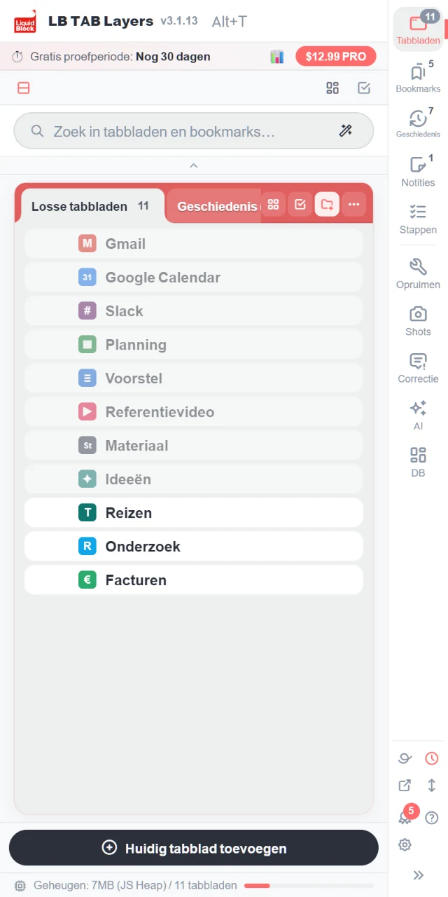
2. De basis
Maak een groep
Klik in de weergave Bookmarks bovenaan de lijst op + Nieuwe groep. Geef de groep de naam van een klus, bijvoorbeeld “Klant C website” of “Elke ochtend”. Het werkt het best met één groep per project.
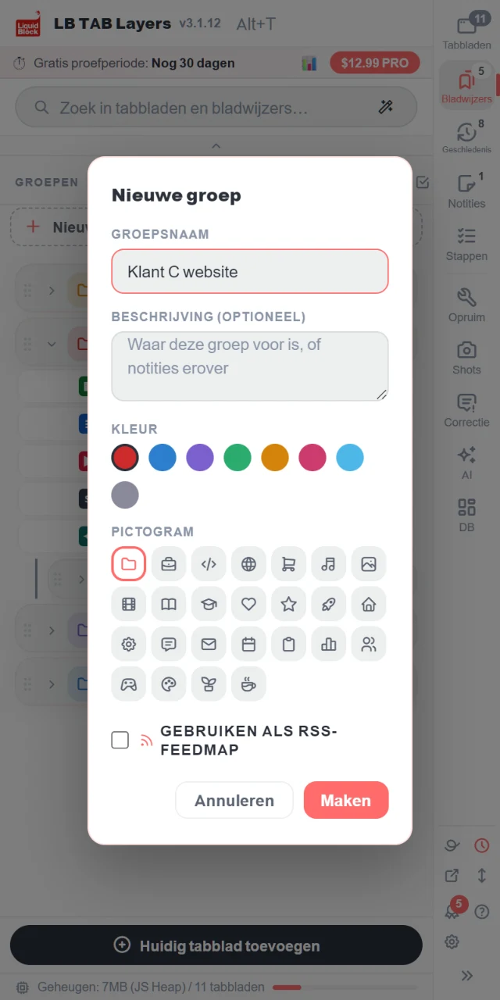
Sla het huidige tabblad op
Klik onderaan in het paneel op Huidig tabblad toevoegen en kies een groep. Groepen waar de pagina al in staat, zijn gemarkeerd met Opgeslagen.
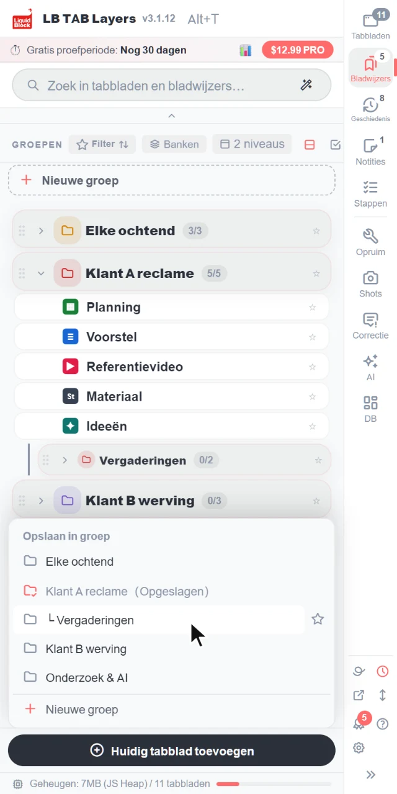
Sla meerdere geopende tabbladen tegelijk op
Klik in de weergave Tabbladen op het rondje links van een tabblad om te beginnen met selecteren. Klik daarna op de rondjes van de andere tabbladen die je wilt opslaan, klik onderaan op Naar groep en kies een groep. Je kunt tabbladen ook één voor één naar een groep slepen.
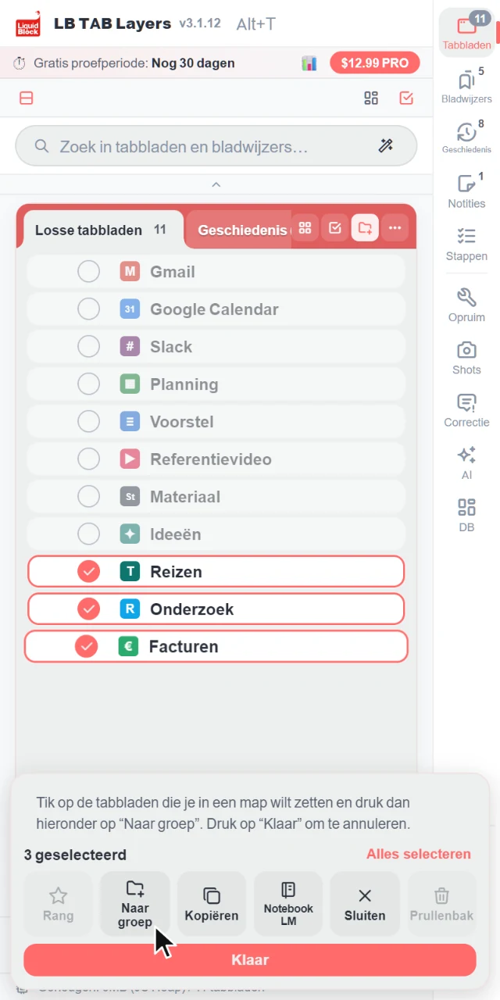
Open alles met ▶, sluit alles met ■
Beweeg de muis over een groep en klik op ▶ om alle tabbladen ervan te openen. Ze gaan samen open als een Chrome-tabbladgroep met dezelfde naam en kleur als je groep. Ben je klaar? Klik dan op ■ om die tabbladgroep in één keer te sluiten. Je opgeslagen tabbladen blijven bewaard.
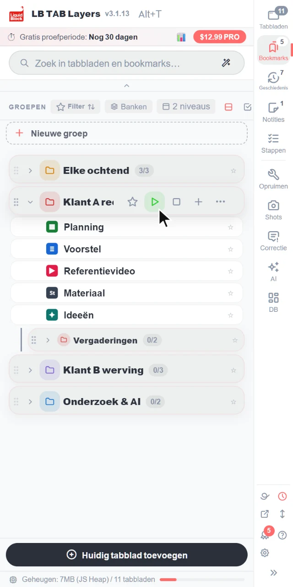
Zoeken
Typ in het zoekvak bovenaan om je geopende tabbladen, je opgeslagen tabbladen en de geschiedenis van vandaag tegelijk te doorzoeken. Een kleine typfout is geen probleem.
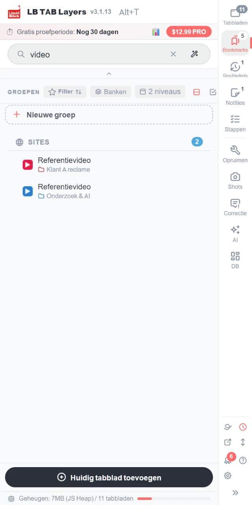
3. Een simpele manier om je werk te ordenen
Eén groep per project
Zie een groep als een bureau voor één klus. Zo kom je de hele dag door:
- ’s Ochtends – klik op ▶ bij het project van vandaag en ga verder waar je gebleven was
- Als je van taak wisselt – sluit het huidige project met ■ en open het volgende met ▶
- Aan het eind van de dag – klik gewoon op ■. Morgen haalt ▶ alles weer terug
Sites die je elke dag gebruikt, op de pinbalk
Voor sites die je elke dag opent, zoals je e-mail of je agenda: klik met rechts op een tabblad of een bookmark en kies Toevoegen aan pinbalk. Ze staan dan als kleine pictogrammen bovenaan in het paneel en gaan met één klik open (maximaal 12). Je kunt ze er ook naartoe slepen.
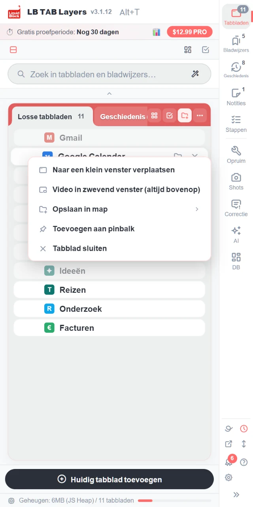
Elk project een eigen venster
Klik met rechts op een groep en kies Openen in nieuw venster. De groep gaat dan als tabbladgroep open in een apart venster. Handig als je aan twee dingen tegelijk werkt of een tweede beeldscherm gebruikt.
Iets vergeten op te slaan? Het staat in de geschiedenis van vandaag
Je hoeft niet alles op te slaan. Pagina’s die je niet hebt opgeslagen, vind je nog steeds bij Geschiedenis, in de volgorde waarin je ze vandaag hebt bezocht. Sla het belangrijke op in een groep en sluit de rest: meer is meestal niet nodig.
🔒 Alles wat je opslaat, wordt bewaard als Chrome-bookmark. Je opgeslagen tabbladen blijven staan, ook als je ze sluit of Chrome opnieuw start, en LB TAB Layers stuurt je bookmarks nergens naartoe. Gegevens die in de extensie zelf staan, zoals notities, kun je exporteren via Instellingen.
Nog tien handelingen vind je in de handleiding (in het Engels).
Veelgestelde vragen
Q. Hoe open ik LB TAB Layers?
Druk op Alt+T op je toetsenbord (Option+T op een Mac). Je kunt ook op het pictogram van LB TAB Layers in de werkbalk klikken.
Q. Verdwijnen mijn opgeslagen tabbladen als ik de extensie verwijder?
Nee. Opgeslagen tabbladen blijven in je Chrome-bookmarks staan, in mappen met dezelfde naam als je groepen. Gegevens die in de extensie zelf staan, zoals notities, worden wel gewist. Exporteer die dus eerst via Instellingen.
Q. Waar zoekt het zoekvak in?
In je geopende tabbladen, in de tabbladen die je in je groepen hebt opgeslagen en in de geschiedenis van vandaag, allemaal tegelijk.
Q. Is het gratis?
Ja. In de gratis versie kun je maximaal 5 groepen maken. De geschiedenis van vandaag, Stappen, het dashboard en AI-zoeken zijn PRO-functies. Na de installatie kun je 30 dagen lang alle functies gebruiken.
Begin met één project.
Openen met Alt+T, het huidige tabblad opslaan, openen met ▶ en sluiten met ■. Geen account nodig · Opgeslagen als Chrome-bookmarks · 30 dagen lang alle functies gratis
Gratis toevoegen aan Chrome →